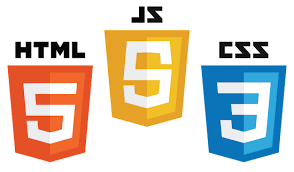
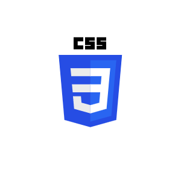

A programming language is a set of specific rules, instructions, and syntax that allows a human to communicate with and control a computer to perform a particular task, such as creating software or a website. Computers, which understand only machine code (binary zeros and ones), cannot interpret natural human language, so programming languages act as a bridge to translate human ideas into machine-executable commands.
HTML stands for Hypertext Markup Language and is the foundational language for creating web pages and structuring their content. It uses markup elements, denoted by tags in angle brackets, to define the meaning and organization of web content like text, images, and links for display in a web browser. HTML is often used with Cascading Style Sheets (CSS) for styling and JavaScript for dynamic functionality, forming the basic building blocks of the web.

CSS, which stands for Cascading Style Sheets, is a stylesheet language used to describe the presentation and styling of a document written in a markup language, most commonly HTML. It is a cornerstone technology of the World Wide Web, working alongside HTML and JavaScript.
JavaScript (JS) is a dynamic, high-level programming language primarily known for enabling interactive and dynamic content on web pages. It is one of the three core technologies of the World Wide Web, alongside HTML (for structuring content) and CSS (for styling content).